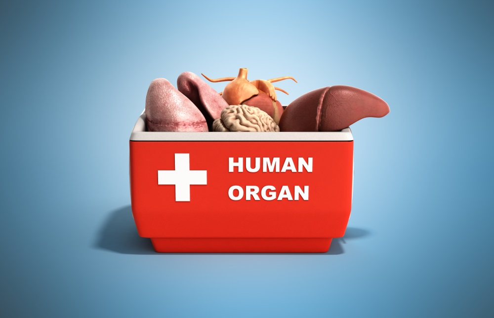
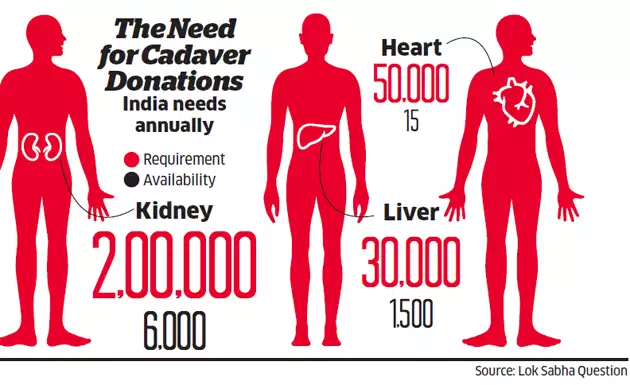
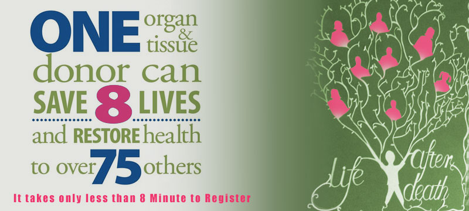
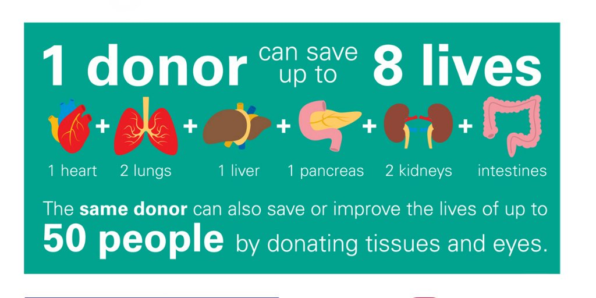
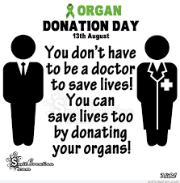
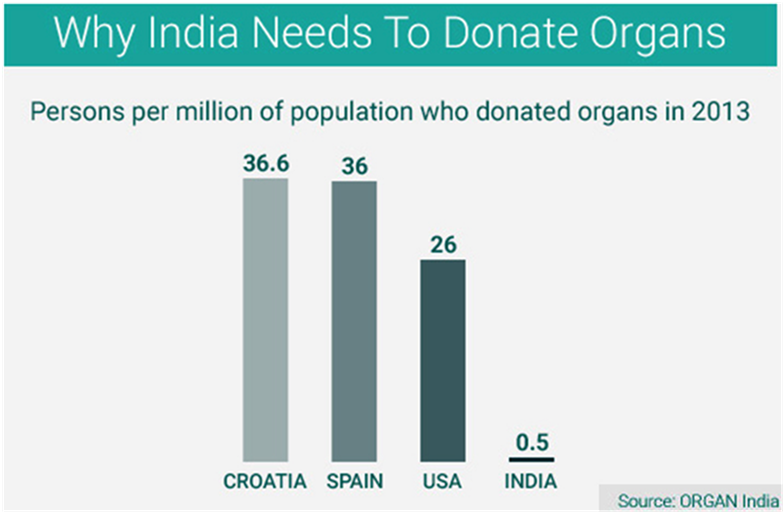
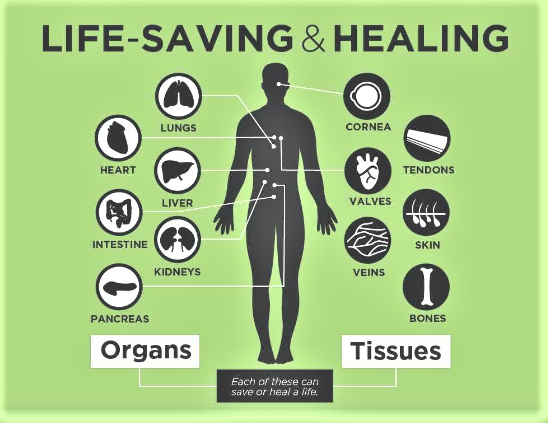

Organ donation is the process of surgically removing an organ or tissue from one person (the organ donor) and placing it into another person (the recipient). Transplantation is necessary because the recipient’s organ has failed or has been damaged by disease or injury.
Organ transplantation is one of the great advances in modern medicine. Unfortunately, the need for organ donors is much greater than the number of people who actually donate.



What organs and tissues can be transplanted?
Organs and tissues that can be transplanted include:

.Liver
.Kidney
.Pancreas
.Heart
.Lung
.Intestine
.Cornea
.Middle ear
.Skin
.Bone
.Bone marrow
.Heart valves
.Connective tissue
Vascularized composite allografts (transplant of several structures that may include skin, bone, muscles, blood vessels, nerves, and connective tissue)
Who can be an organ donor?
People of all ages should consider themselves potential donors. When a person dies, he or she is evaluated for donor suitability based on their medical history and age. The Organ Procurement Agency determines medical suitability for donation.
AKROSH COMPANY
the organisation of ARA Foundation for Charity

FACT
2003=2017
While in 2013, there were only 313 donors across India, 2014 saw 411 donors and 2017
had 905 cadaver organ donors leading to 2870 organ donation

INDIA
STATS
The deceased donor donation rate in India stands at around 0.34 per million, which is abysmally low
when compared to the organ donation rate prevalent in other developed countries

RULE
THOA
Organ donations are legal by Indian law. The Indian government enacted the Transplantation of Human Organs Act (THOA), 1994,
which allows organ donation